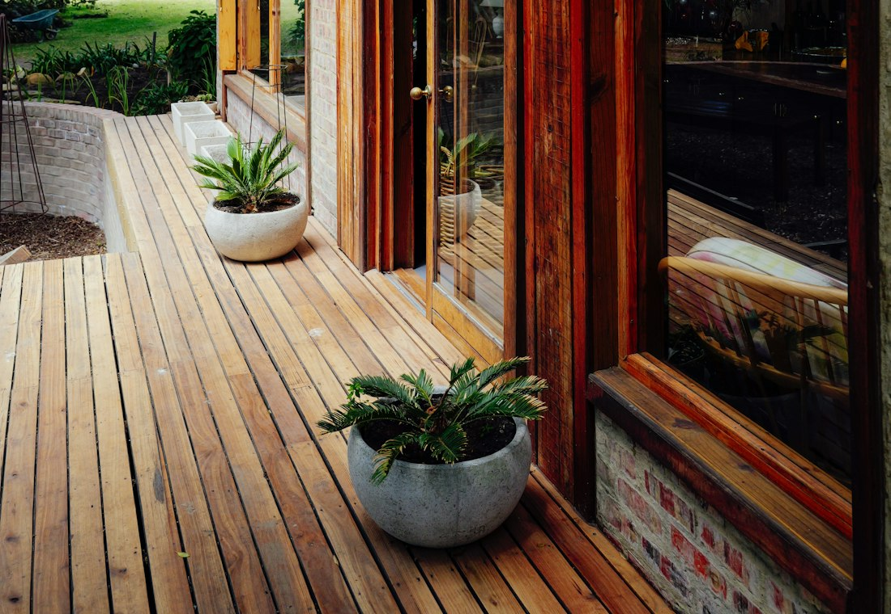
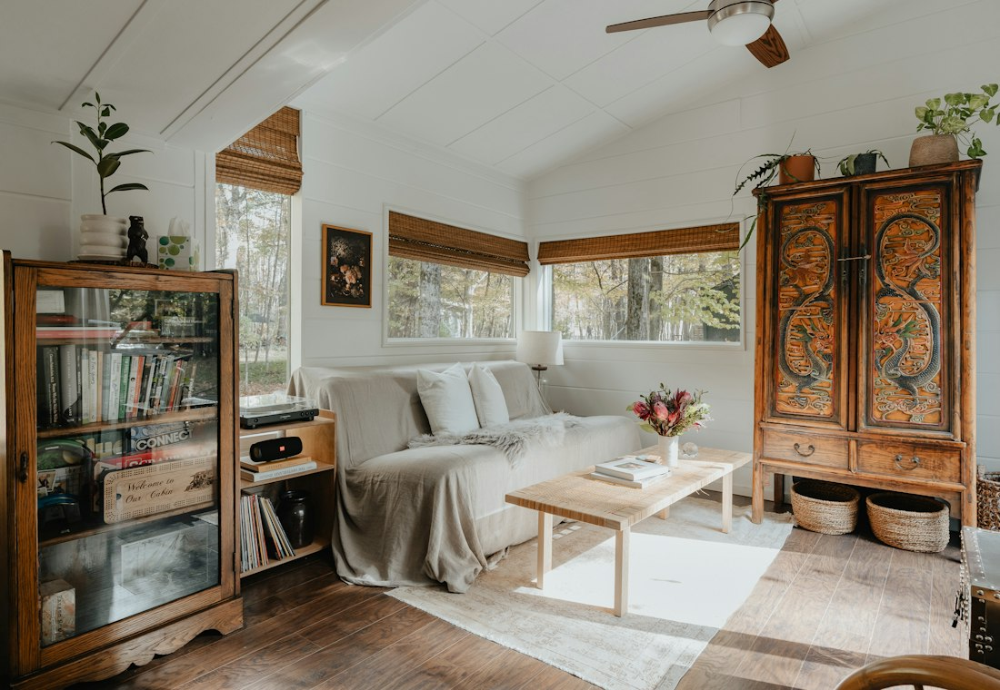
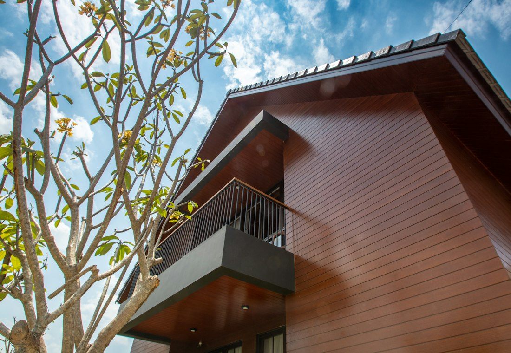

素材
手が触れる場所には、表情の変化も楽しめる木を。
季節の光と風を取り込む、小さな注文住宅を設計・施工しています。
手が触れる場所には、表情の変化も楽しめる木を。
敷地の光と風を確かめ、窓や軒の位置を考えます。
引き渡し後の点検と、暮らしが変わったときのご相談も受けます。
間取り 3LDK ／ 延床 92㎡ ／ 夫婦と子ども1人
庭と居間がつながる間取り。

間取り 4LDK ／ 延床 108㎡ ／ 夫婦と子ども2人
居間から木のデッキへそのまま出られます。
間取り 3LDK ／ 延床 101㎡ ／ 夫婦と子ども1人
道路からの視線を避けて居間を二階に。
間取り 3LDK ／ 延床 96㎡ ／ 夫婦と子ども2人
台所から食卓と庭を見渡せます。

間取り 2LDK ／ 延床 83㎡ ／ 夫婦
廊下を読書の場所として使います。

間取り 3LDK ／ 延床 104㎡ ／ 夫婦と子ども1人
深い軒がバルコニーを雨と日差しから守ります。
プランからご契約まで約2〜4か月、着工からお引き渡しまで約5〜8か月がめやすです。
| 内訳 | 参考（税込） |
|---|---|
| 建物本体 | 2,200〜3,100万円 |
| 付帯工事 | 250〜550万円 |
| 諸費用 | 150〜350万円 |
建物30坪前後の想定です。土地代は別途。土地や仕様で変わります。
朝の食卓に日が入るのが楽しみです。個人の感想です（架空）。
窓の高さを図面で一緒に確かめられました。個人の感想です（架空）。
敷地を見て、間取りと暮らし方を一緒に考えます。
現場の工程と引き渡し後の点検を担当します。
〇月〇日。〇〇市で木の家の見学会を開く想定です。
見学会・相談会に申し込むはい。予算や通勤、日当たりの希望から一緒に考えます。
フォームのご用件から「資料請求」を選べます。
〇〇市 〇〇町（架空）
000-0000-0000（架空）
建設業許可 〇〇県知事許可（般-〇）第〇〇〇〇号（サンプルのため架空です）